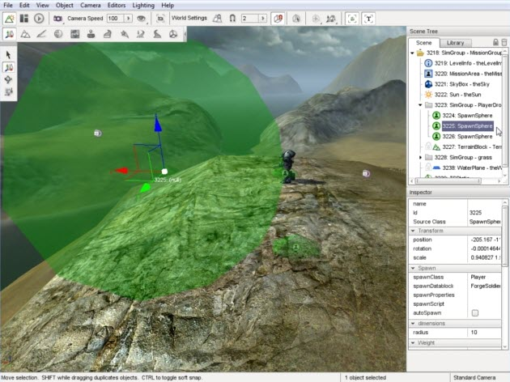
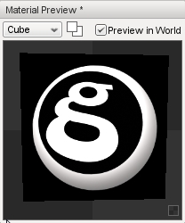

IntroductionTorque 3D's stock demos and templates are setup for first person shooter (FPS) games. However, the engine has multiple camera modes that can change the perspective and how the game is controlled. In this tutorial, we are going to modify the camera and mouse controls to emulate different game types: Hack & Slash and RTS.
Some of the topics that will be covered are:
Copy the art folder in the zip file on top of your project's art file. This will add the models, their datablocks, and their materials to your project if they do not exist. When you are ready, continue reading to configure your mouse controls. The zip file adds two new models to the project. One is a simple, static building. The other is a custom player model called Boom Bot. While you can simply drag and drop these models in via the World Editor, we need to hook up a script file prepared specifically for Boom Bot. To get Boom Bot fully working, open game/art/datablocks/datablockExec.cs Scroll down until you see the following code: exec("./player.cs");
Just below that line, add the following: exec("./BoomBot.cs");
Mouse SetupThe following code will change the way mouse input affects movement and click interaction. Mouse Cursor TogglingNormally, the camera is controlled by an actor in FPS (aim) mode. To focus on just mouse and camera work, we need to change how the default camera is controlled. Open game/scripts/server/gameCore.cs. In function GameCore::preparePlayer(%game, %client), locate the following line: %game.spawnPlayer(%client, %playerSpawnPoint);
%game.spawnPlayer(%client, %playerSpawnPoint, false);
Immediately below the %game.spawnPlayer() function, add the following code:
if (%client.getControlObject() == %client.player)
{
%client.camera.setVelocity("0 0 0");
%control = %client.camera;
}
else
{
%client.player.setVelocity("0 0 0");
%control = %client.player;
}
%client.setControlObject(%control);
This sets us up to correctly control the camera from the new fly mode.
// Turn mouse cursor on or off
// If %val is true, the button was pressed in
// If %val is false, the button was released
function toggleMouseLook(%val)
{
// Check to see if button is pressed
if(%val)
{
// If the cursor is on, turn it off.
// Else, turn it on
if(Canvas.isCursorOn())
hideCursor();
else
showCursor();
}
}
// Bind the function toggleMouseLook to the keyboard 'm' key
moveMap.bind(keyboard, "m", "toggleMouseLook");
noCursor = "0";
Mouse Click ReactionOpen game/scripts/gui/playGui.cs. Add the following function at the end of the file: // onRightMouseDown is called when the right mouse button is clicked in the scene
// %pos is the screen (pixel) coordinates of the mouse click
// %start is the world coordinates of the camera
// %ray is a vector through the viewing
// frustum corresponding to the clicked pixel
function PlayGui::onRightMouseDown(%this, %pos, %start, %ray)
{
// find end of search vector
%ray = VectorScale(%ray, 2000);
%end = VectorAdd(%start, %ray);
// only care about terrain objects
%searchMasks = $TypeMasks::TerrainObjectType;
// search!
%scanTarg = ContainerRayCast( %start, %end, %searchMasks );
// If the terrain object was found in the scan
if( %scanTarg )
{
// spawn a new object at the intersection point
%obj = new TSStatic()
{
position = getWords(%scanTarg, 1, 3);
shapeName = "art/shapes/building/orcburrow.dts";
collisionType = "Visible Mesh";
scale = "0.5 0.5 0.5";
};
// Add the new object to the MissionCleanup group
MissionCleanup.add(%obj);
}
}
Mouse-Driven InputWithout FPS controls and player aiming, we need a new way to control the Player object. The best examples of a mouse driven game genre are RTS and Hack & Slash. Typically, these game types allow you to move and attack using the mouse buttons. Let's start with movement. Player SpawningAt this point, we can spawn an AI player to stand in for the stock player. This AI will be controlled by our mouse inputs. Torque 3D uses a simple spawn system, which can be easily modified to spawn any kind of object (of any class).
(click to enlarge) 
MovementNow that we have an AI player spawning in the game, we can send it commands. Open game/scripts/gui/playGui.cs. In the function onRightMouseDown, select the following lines: // If the terrain object was found in the scan
if( %scanTarg )
{
// spawn a new object at the intersection point
%obj = new TSStatic()
{
position = getWords(%scanTarg, 1, 3);
shapeName = "art/shapes/building/orcburrow.dts";
scale = "0.5 0.5 0.5";
};
// Add the new object to the MissionCleanup group
MissionCleanup.add(%obj);
}
if( %scanTarg )
{
ClientGroup.getObject(0).player.setMoveDestination( getWords(%scanTarg, 1, 3) );
}
ClientGroup - Special SimGroup that keeps track of all client game connections .getObject(0) - Accesses (by 0 index) the first client connection stored in the SimGroup. Since this is tutorial is not intended to be a full, multiplayer RTS game, you can always use the 0 index to access your connection. .player - Accesses the player object (AIPlayer, in this case) of the current client connection. Without using a global variable assigned to this this player reference, you always want to go through the game's connection to access the object. This goes for other similar objects, such as the camera. .setMoveDestination(getWords(...)) - Calls AIPlayer member function which will move the actor to an (X,Y,Z) location in the world getWords(%scanTarg, 1, 3) - Grabs the coordinates from the object found during the scan, in string format
Spawning Enemy TargetsOur player looks lonely and bored. We should give him some targets, and the means of disposing them. Open game/scripts/client/default.bind.cs, and add the following to the bottom of the file: // Spawn an AI guy when key is pressed down
function spawnAI(%val)
{
// If key was pressed down
if(%val)
{
// Create a new, generic AI Player
// Position will be at the camera's location
// Datablock will determine the type of actor
new AIPlayer()
{
position = LocalClientConnection.camera.getPosition();
datablock = "DefaultPlayerData";
};
}
}
// Bind the function spawnAI to the keyboard 'b' key
moveMap.bind(keyboard, b, spawnAI);
AttackingCurrently, we have a player we can control, and targets that can die. Let's give the player some combat skills. In game/scripts/gui/playGui.cs, add the following function to the bottom of the script: // onMouseDown is called when the left mouse
// button is clicked in the scene
// %pos is the screen (pixel) coordinates of the mouse click
// %start is the world coordinates of the camera
// %ray is a vector through the viewing
// frustum corresponding to the clicked pixel
function PlayGui::onMouseDown(%this, %pos, %start, %ray)
{
%ray = VectorScale(%ray, 1000);
%end = VectorAdd(%start, %ray);
// Only care about players this time
%searchMasks = $TypeMasks::PlayerObjectType;
// Search!
%scanTarg = ContainerRayCast( %start, %end, %searchMasks );
// Get our player/actor
%ai = LocalClientConnection.player;
// If an enemy AI object was found in the scan
if( %scanTarg )
{
// Get the enemy ID
%target = firstWord(%scanTarg);
// Don't shoot at yourself
if( %target != %ai )
{
// Cause our AI object to aim at the target
// offset (0, 0, 1) so you don't aim at the target's feet
%ai.setAimObject(%target, "0 0 1");
// Tell our AI object to fire its weapon
%ai.setImageTrigger(0, 1);
return;
}
}
// If no valid target was found, or left mouse
// clicked again on terrain, stop firing and aiming
%ai.setAimObject(0);
%ai.setImageTrigger(0, 0);
}
Tweaking AttacksYou might have noticed some flaws with the base code:
// Tell our AI object to fire its weapon %ai.setImageTrigger(0, 1);
// Tell our AI object to fire its weapon in 100 milliseconds
%ai.schedule(100, "setImageTrigger", 0, 1);
simObject.schedule(time, command, arg1...argN)
// Tell our AI object to fire its weapon in 100 milliseconds %ai.schedule(100, "setImageTrigger", 0, 1);
// Stop firing in 150 milliseconds %ai.schedule(150, "setImageTrigger", 0, 0);
The death animation code can be found in game/scripts/server/player.cs. Open this file, then scroll down to the following function:
function Player::playDeathAnimation(%this)
{
if (isObject(%this.client))
{
if (%this.client.deathIdx++ > 11)
%this.client.deathIdx = 1;
%this.setActionThread("Death" @ %this.client.deathIdx);
}
else
{
%rand = getRandom(1, 11);
%this.setActionThread("Death" @ %rand);
}
}
The template uses Gideon as the stock actor. The model ships with 11 death animations, which are labeled as "death#" (where # is 1 - 11). This works well for a Player constantly dying, but for an AIPlayer in this tutorial, we only need 1 death animation. This tutorial also mainly works as a client side (single player) prototype. In simpler terms, we do not need to use the death index (.deathIdx) or %client variables. We can simply call the first death animation available. Change the ::playDeathAnimation(...) function to the following:
function Player::playDeathAnimation(%this)
{
if (isObject(%this.client))
{
if (%this.client.deathIdx++ > 11)
%this.client.deathIdx = 1;
%this.setActionThread("Death" @ %this.client.deathIdx);
}
else
{
%rand = getRandom(1, 11);
%this.setActionThread("Death" @ %rand);
}
}
Now, when the target AI loses all its health it will play a death animation and eventually disappear. Destination MarkersIn most RTS or Hack & Slash games, some kind of marker is placed on the ground where you clicked. This is usually a visual aid to let you know the move assignment was given, the destination has been set, and the AI is moving.
Creating a MaterialTo get started on our marker creation, run your project in the World Editor. Next, open the Material Editor and click on the Create New Material button.

singleton Material(gg_marker)
{
mapTo = "unmapped_mat";
diffuseMap[0] = "art/markers/g_marker.png";
alphaTest = "1";
alphaRef = "80";
};
Creating a DecalTo create a marker decal, run the World Editor and then open the Decal Editor. Click on the New Decal Data button, next to the garbage bin , and name your new entry "gg_decal".
datablock DecalData(gg_decal)
{
textureCoordCount = "0";
Material = "gg_marker";
};
Spawning the MarkerNow that we have a destination marker, we need to add it upon clicking on the terrain and then delete it when our player reaches its destination. Start by opening game/scripts/gui/playGui.cs. Find the PlayGui::onRightMouseDown function. Inside of this function, replace everything inside this code block: if( %scanTarg )
{
// Replace everything in here
}
// Get access to the AI player we control
%ai = LocalClientConnection.player;
// Get the X,Y,Z position of where we clicked
%pos = getWords(%scanTarg, 1, 3);
// Get the normal of the location we clicked on
%norm = getWords(%scanTarg, 4, 6);
// Set the destination for the AI player to
// make him move
%ai.setMoveDestination( %pos );
// If the AI player already has a decal (0 or greater)
// tell the decal manager to delete the instance of the gg_decal
if( %ai.decal > -1 )
decalManagerRemoveDecal( %ai.decal );
// Create a new decal using the decal manager
// arguments are (Position, Normal, Rotation, Scale, Datablock, Permanent)
// AddDecal will return an ID of the new decal, which we will
// store in the player
%ai.decal = decalManagerAddDecal( %pos, %norm, 0, 1, "gg_decal", true );
Erasing the MarkerThe last thing we need to do is erase the destination marker when our AI player gets to it. Open the game/art/datablocks/BoomBot.cs file, then add the following: // This is a callback function
// This is automatically called by the engine as part
// of the AI routine
// %this - The BoomBotData datablock
// %obj - The instance of this datablock (our AI Player)
function BoomBotData::onReachDestination(%this, %obj)
{
// If there was a decal placed, then it was
// stored in this %obj variable (see playGui.cs)
// Erase the decal using the decal manager
if( %obj.decal > -1 )
decalManagerRemoveDecal(%obj.decal);
}
Camera ModesNow that you've got control of your character, it's time to improve on the camera controls. By default, the Full Template starts observers in "Fly" mode - as if you were an insect flying around the level. This is fine for observing an FPS match, but not very easy to control for a top-down style game.
Orbit Camera
Add the following to the spawnScript field: // OrbitObject mode requires an object to orbit LocalClientConnection.camera.setOrbitObject($SpawnObject, mDegToRad(50) @ " 0 0", 0, 30, 30);
Overhead CameraCameras used by RTS games are slightly different from the Hack & Slash or Fly cameras. They are characterized by a camera that moves laterally along the x and y axis, but generally not in z. This can be realized in T3D by using the "Overhead" camera mode:
LocalClientConnection.camera.position = VectorAdd(PlayerSpawn.position, "0 0 30"); LocalClientConnection.camera.lookAt(PlayerSpawn.position); LocalClientConnection.camera.controlMode = "Overhead";
moveMap.bind(keyboard, b, spawnAI);
moveMap.bind( keyboard, e, moveup ); moveMap.bind( keyboard, c, movedown );
// Adjusts the height of the camera using the mouse wheel
function mouseZoom(%val)
{
// If wheel was scrolled forward
// move camera closer to the ground
if(%val > 0)
{
commandToServer('adjustCameraHeight', -3);
}
// If wheel was scrolled back
// move camera away from the ground
else
{
commandToServer('adjustCameraHeight', 3);
}
}
// Server command that adjusts camera height
function serverCmdadjustCameraHeight(%client, %adjustment)
{
// Take the current camera position (a vector)
// Then add or subtract from the Z element, based on
// the %adjustment value passed in
%client.camera.position = VectorAdd(%client.camera.position, "0 0 " @ %adjustment);
}
Now that the functions are set up, all that is left is creating a key bind to call them. Back in default.bind.cs, add the following to the bottom of the script: moveMap.bind( mouse, zaxis, mouseZoom ); You should be able to zoom in and out on your actor using your mouse's scroll wheel If you want to play around with the camera settings created in this tutorial, add the following code to the bottom of game/scripts/server/commands.cs. function serverCmdRTSOrbit(%client)
{
%client.camera.setOrbitObject(%client.player, mDegToRad(30) @ " 0 0", 0, 25, 25);
}
function serverCmdRTSOverhead(%client)
{
%client.camera.position = VectorAdd(%client.camera.position, "0 0 5" );
%client.camera.lookAt(%client.player.position);
%client.camera.controlMode = "Overhead";
}
commandToServer('RTSOrbit');
commandToServer('RTSOverhead');
ConclusionThe purpose of this tutorial was to show you some of the more advanced capabilities of TorqueScript, and combine the language with Torque 3D's visual editors to create a prototype game. As you just experienced, getting a non-FPS prototype game started does not take long.
You can download the completed scripts by CLICKING HERE. |

{kind=link}
{kind=link}
{kind=link}
{kind=link}
{kind=link}